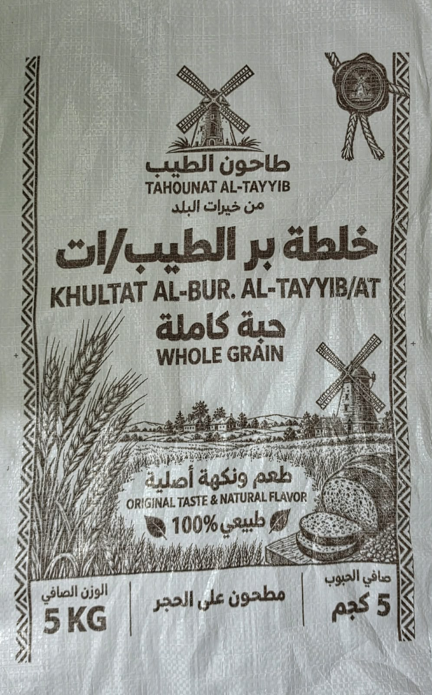

بر الحبة الكاملة البلدي
أساس الخلطة ونكهتها الأصيلة. تُطحن الحبة كاملة بجميع أجزائها: النخالة والجنين والجزء الداخلي، لتحمل إلى خلطة البر ما فيها من عناصر غذائية طبيعية.
خلطة الطيبات تجمع بر الحبة الكاملة البلدي مع جنين القمح العضوي والنخالة العضوية. تُطحن الحبة بكل أجزائها، لتجمع نكهة البر الأصيلة وعناصر الحبة الغذائية الطبيعية في وصفاتك اليومية.
السعر والتوفر النهائيان حسب صفحة المنتج في المتجر.

بر الحبة الكاملة البلدي هو أساس الخلطة، ويُضاف إليه جنين القمح العضوي والنخالة العضوية لإثراء تركيبتها.
أساس الخلطة ونكهتها الأصيلة. تُطحن الحبة كاملة بجميع أجزائها: النخالة والجنين والجزء الداخلي، لتحمل إلى خلطة البر ما فيها من عناصر غذائية طبيعية.
جزء من الحبة يحمل عناصر غذائية طبيعية، يُضاف إلى البر لإثراء الخلطة.
الطبقة الخارجية لحبة القمح، وتتميز باحتوائها الطبيعي على الألياف وعناصر غذائية أخرى.
إضافة جنين القمح والنخالة تدعم تنوّع المكونات الغذائية في الخلطة. فالحبوب الكاملة وأجزاؤها تحتوي طبيعيًا على فيتامينات ومعادن وألياف.
هذه معلومات عامة عن مكونات الحبوب الكاملة، وليست تحليلًا غذائيًا لهذه العبوة. كميات العناصر في المنتج تُحدّد ببطاقة القيم الغذائية.
المصدر: Harvard · The Nutrition Source
تعرّف على مكونات الخلطة واخترها وفق الأطعمة التي تتبعها في نظامك. بر الحبة الكاملة البلدي مع جنين القمح والنخالة، في عبوة واحدة لوصفاتك المنزلية.
جرّبها في وصفة خبز البر المفضلة لديك، واضبط الماء بحسب قوام العجين.
نكهة البر في أطباقك التقليدية، مع ضبط القوام المناسب للوصفة.
ابدأ بوصفة تعرفها، وعدّل كمية السوائل تدريجيًا عند استخدام الخلطة.
تفاصيل تساعدك على معرفة الخلطة واختيارها لمائدتك.
تجمع بر الحبة الكاملة البلدي مع جنين القمح العضوي والنخالة العضوية، وتأتي مطحونة على الحجر بحسب العبوة.
التدعيم المذكور هنا هو إضافة جنين القمح والنخالة. وصف الفيتامينات والمعادن يتعلق بوجودها الطبيعي في هذه المكونات، ولا يشير إلى إضافة خليط فيتامينات مستقل.
نقدّمها لمن يختار بر الحبة الكاملة ضمن نظام الطيبات، مع إيضاح مكوناتها. ليست الصفحة اعتمادًا رسميًا للمنتج من جهة أو صاحب نظام غذائي؛ طابق مكوناتها مع الإرشادات التي تتبعها.
نعم. الخلطة تحتوي على القمح والغلوتين، ولا تناسب من يحتاج إلى تجنبهما بسبب حساسية القمح أو الداء البطني.
حجم العبوة الموضح ٥ كجم. اضغط «اطلب من المتجر» للانتقال إلى صفحة المنتج وإتمام الطلب والاطلاع على السعر والتوفر وخيارات الشحن الحالية.
خلطة الطيبات من طاحون الطيب · عبوة ٥ كجم